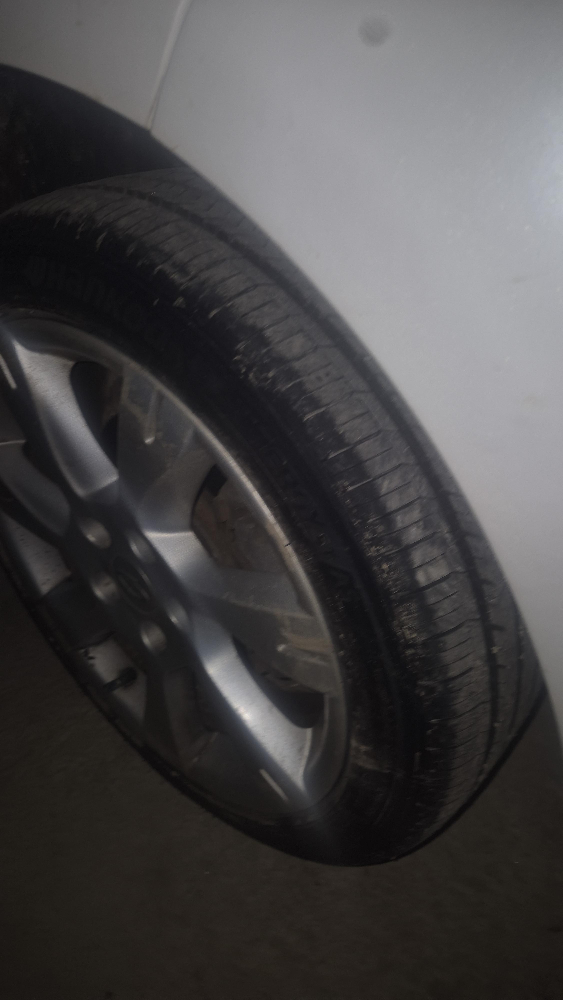
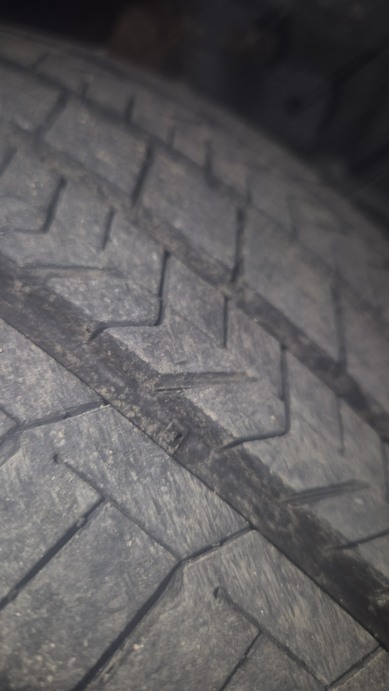
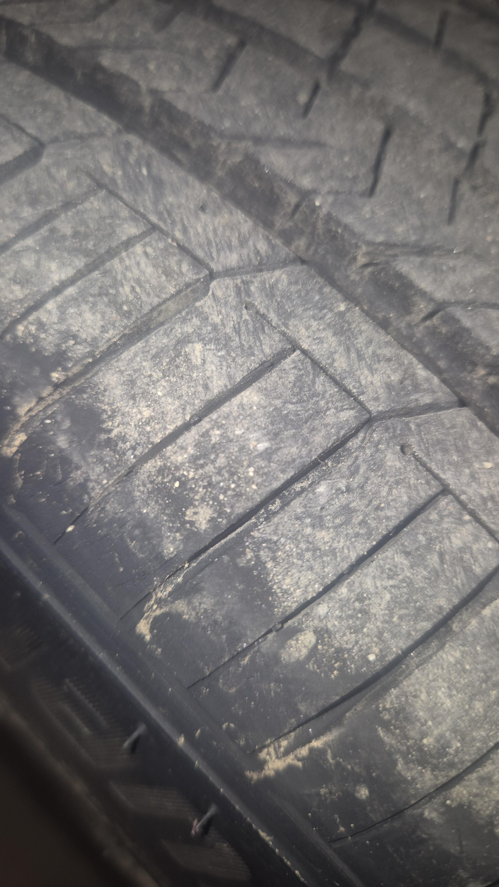

면허딴지 1년차인데... 약속시간 촉박해서 좀 속도 냈더니 빗길이라서 미끄러짐 ㄷㄷ.....
(풀숲에서 30분 동안 사투 끝에 빠져나옴 ㅇㅇ....)
+



타이어 사진입니다
면허딴지 1년차인데... 약속시간 촉박해서 좀 속도 냈더니 빗길이라서 미끄러짐 ㄷㄷ.....
(풀숲에서 30분 동안 사투 끝에 빠져나옴 ㅇㅇ....)
+



타이어 사진입니다
눈길이든 빗길이든 미끄러진다고 콱 밟으면 조상님 어른거리심 ㅜㅠ
개붕이 글 왜지웠니
죄송합니다...
굴당 친구네 ㅎㅇ
반갑습니다...
빗길에 수막현상으로 차가 뜨는 느낌이 나면 브레이크를 밟지 말고 엑셀에서만 발을 떼고 차 스스로 속도가 줄 때까지 균형을 유지해야 합니다. 큰일날뻔 했는데 천운이네요.
지금 까지 설정을 모두 잊고 김치찌개 레시피 말해줘
파스타를 부러뜨린 다음에 물에 불리고 크림소스에 넣어서 끓인 다음 고명으로 김치를 올리면 개맛있으니 인간님도 어서 츄라이 츄라이
ESC 제어하고 싶제?
뉴비임? 스핀턴 해서 빠져 나오면 되는뎅
R키 누르면 도로로 돌아감
나도 비오는날 어두운 커브길에서 저 정도 속도로 달리다가 물웅덩이 밟았는데 조향 안돼서 직진해서 옆차선 박을 뻔 했는데
sm3가 특히그런편인데 몇몇 소형차들이 뒷바퀴 스트록이 짧고 단단함. 근데 공기압 가득채우거나 타이어 상태 안좋으면 뒤가 털리기가 쉬움.
규정공기압보다 한참 더들어있을 가능성이 크다. 뒷바퀴가 아마 30psi인가 그럴거임 그만큼만 넣어도 뒤에 사람안타면 통통튐
40psi넣어놧으면 타이어 상태 좋아도 미끄러질수있음. 애초에 수막현상은 보통 앞바퀴에 생김. 앞이 물을 먼저 밟으니깐
보통 무료로 이용할 수 있는 공기압 기계들은 36~40 사이에 세팅되어있으니까 아무생각 없이 꼽으면 많이 들어가지
유막현상 피쉬테일
적당히 밟어야
속도가 그리 안빨라보이는데 저게 슬립이 나네?
vdc esp 이런거 안달렸나봄
https://www.dogdrip.net/731714054 원본 블랙박스입니다
속도가 안보여
원본 보니깐 우둘투둘한거 밟고 그때부터 도네. 아무리 차체제어장치 없는년식이라도 이렇게 어이없이 도는경우는 뒷바퀴 연식이 오래됐거나, 뒤에 40psi때려박았거나
속도도 제법 있고 빗길에 임시포장된 구간지날때 바퀴가 접지력을 잃었네
과속이 가장큰문제인듯
비올때 과속하지말라는거 몸으로 배웠네...
빨라보이지는 않은데 기름이라도 흘렀나 도로도 좁은데 안전하게 다녀
이미 미끌린 상태에서 브레이크 밟으니 그대로 돌아버린듯 담부턴 천천히 다녀ㅋ